/Treasure Hill Artist Village Rebranding: Self Sustaining Creation - Concept
Through in-depth research, field visits, and brand revitalization, the aim is to closely integrate culture and visual identity into the Treasure Hill Artist Village, making it an essential part of the space's development.
Main Idea of Update
Environmental design leaves the focus to the space itself.
/Design process
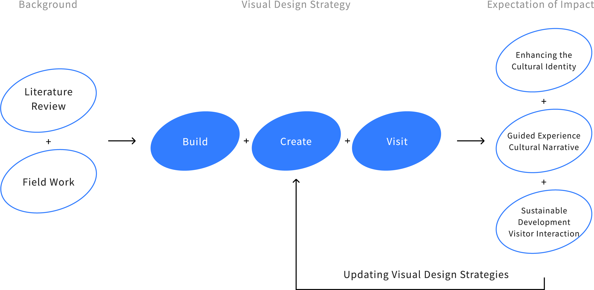
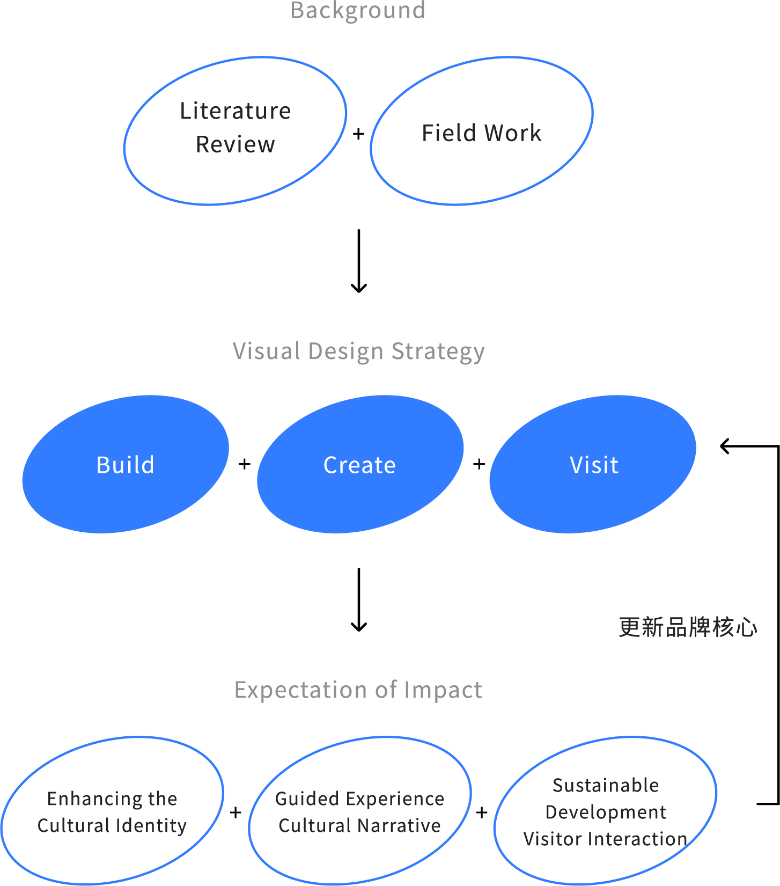
/Reason for Update
After completing the initial design, it was found that the visual expression of the core spirit was too complex. The team collectively agreed that the focus of the environmental design should be left to the space itself. Therefore, the core spirit of Treasure Hill was condensed into the concept of "self-made creations," in line with government policies. Three sub-concepts were introduced based on feedback from residents, artists, and visitors: "building houses," "creating art," and "visiting." These three elements come together to form an art-residence symbiotic settlement, making the visitors' experience an integral part of the cultural chain within the village.
/Design Strategy
-
Removed illustrations, keeping only the geographical line segment as the visual element, allowing the expression of style to be returned to the space itself.
-
Used geographical line segments as the basic shape (historical cross-sections) and extended to other types of line segments (4–6 variations).
-
Incorporated materials commonly used in self-built homes, such as pipes, cement, and wire, into the overall environmental design, so that signage, road signs, and other environmental indicators blend with Treasure Hill's surroundings. This approach highlights the uniqueness of the space while creating a sense of unity, allowing the story behind Treasure Hill to be more intuitively conveyed to visitors.
/Brand website
/Exhibition Results
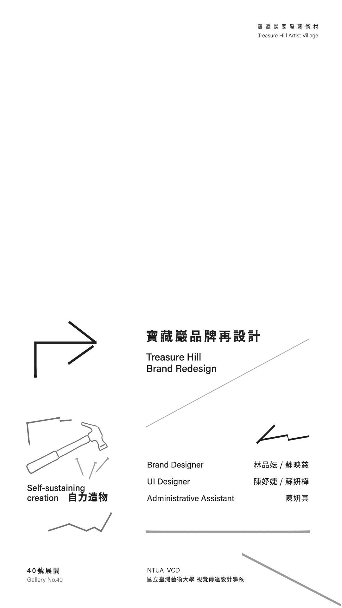
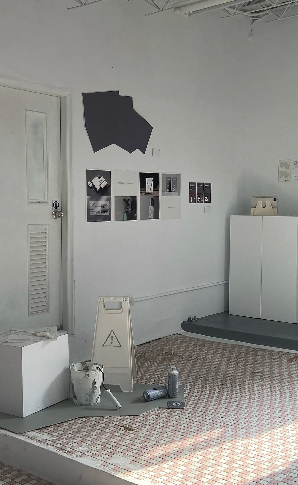
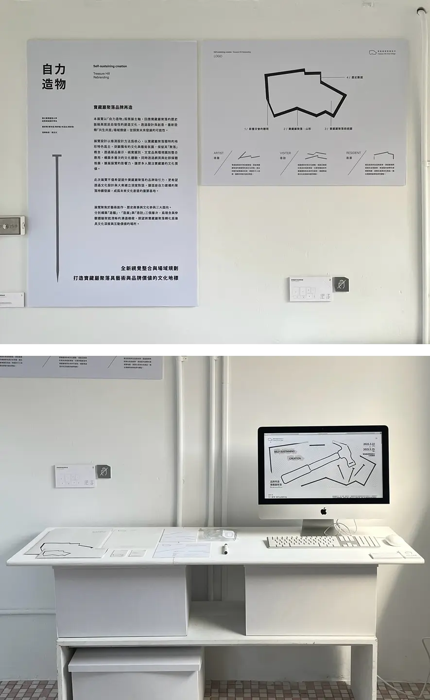
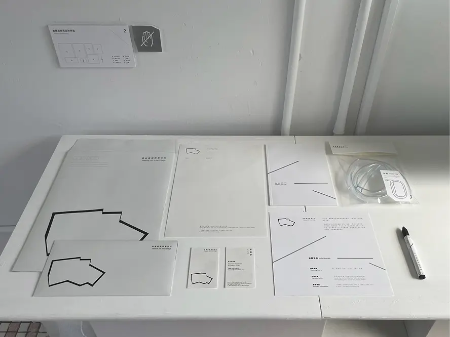
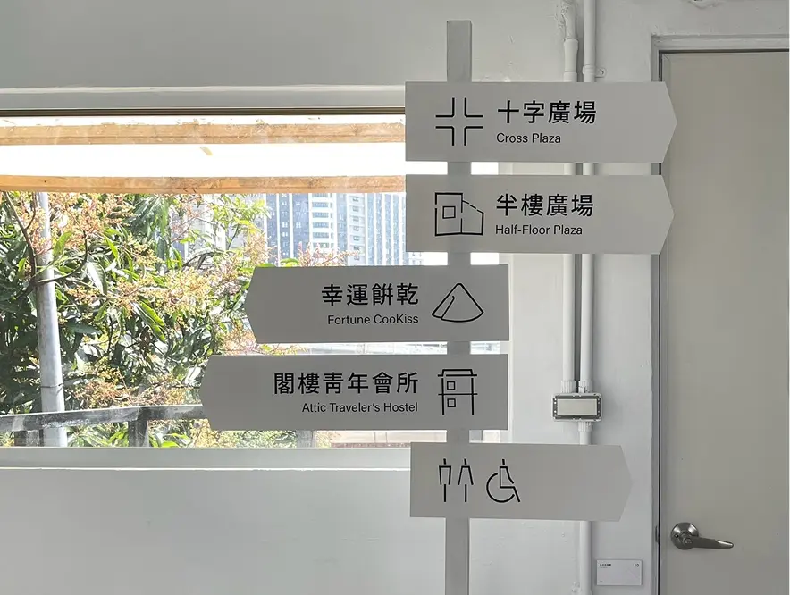
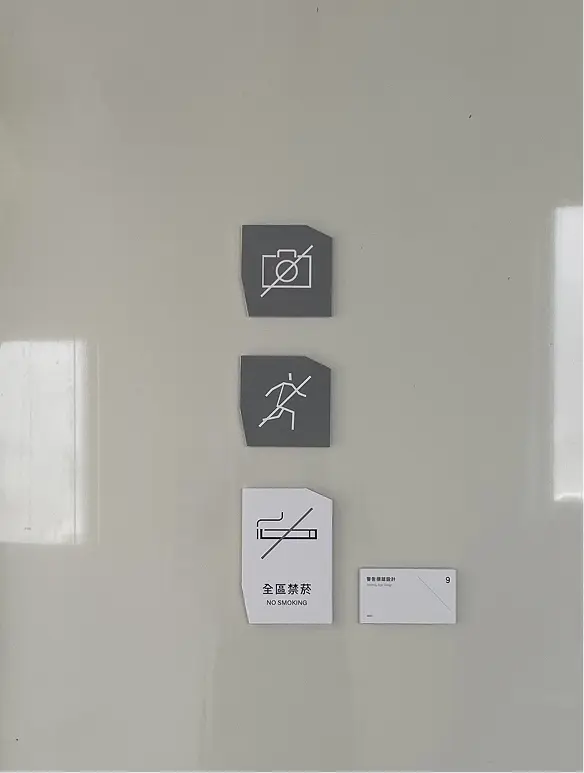
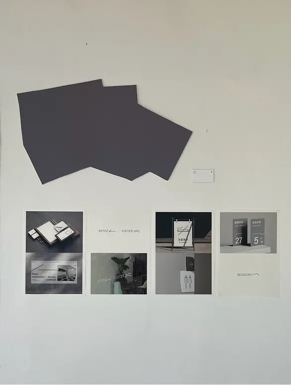
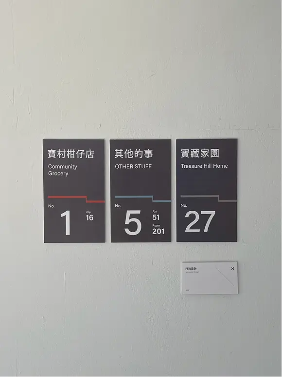
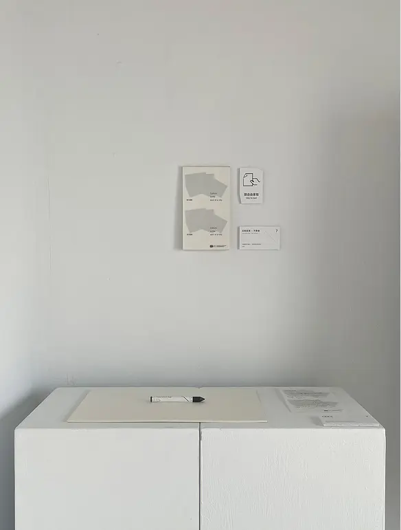
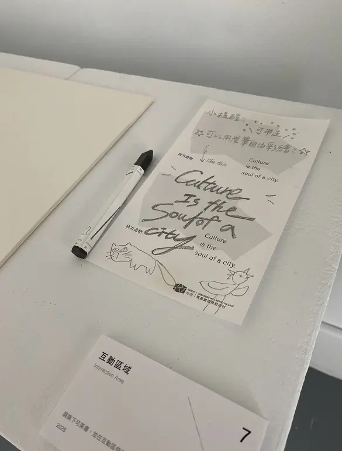
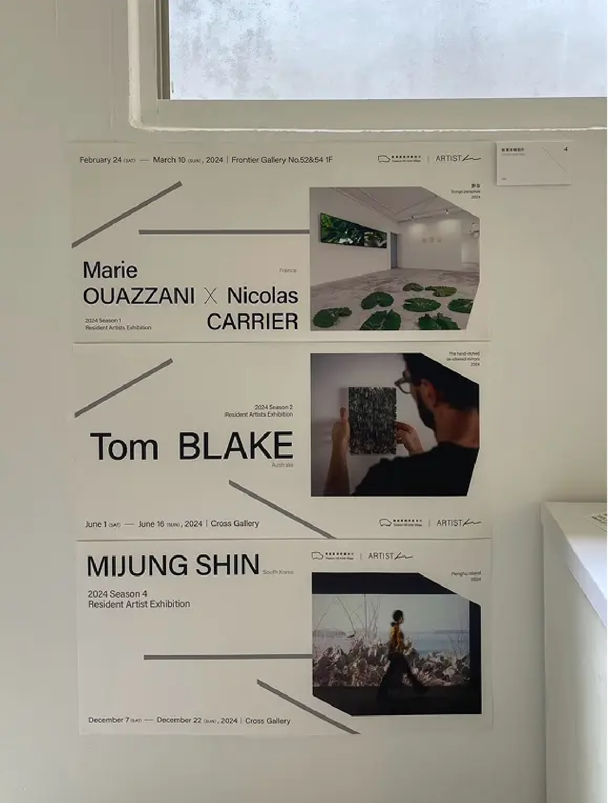
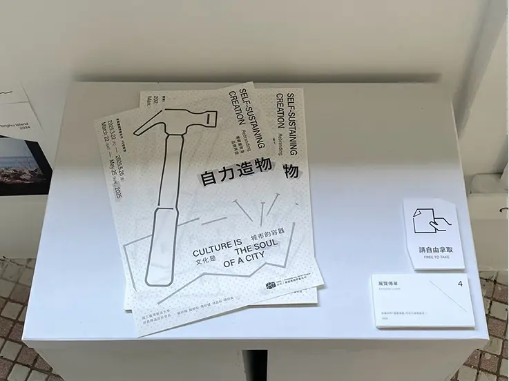
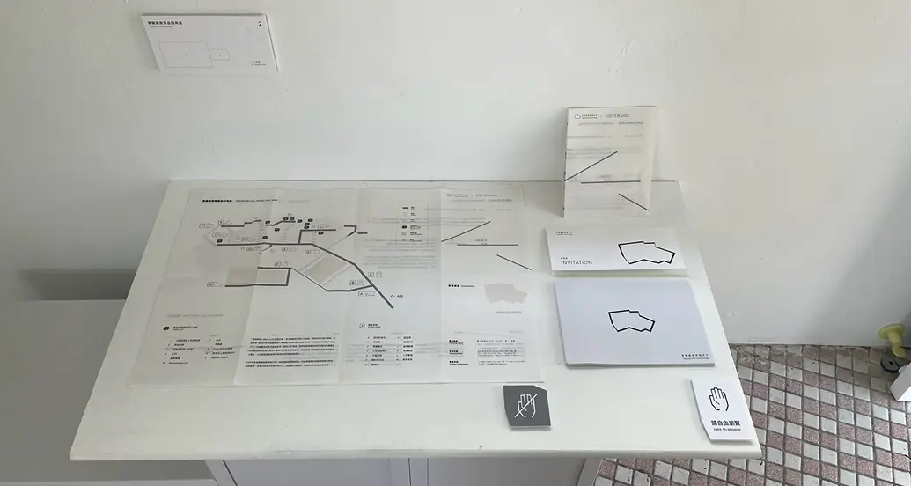
/Exhibition Process
Team
Brand Design \ Su Ying-Tzu, Lin Pin-Yun
UI Design \ Su Yen-Hua, Chen Yu-Jie
Administrative Assistant \ Chen Yen-Jen